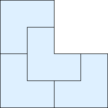
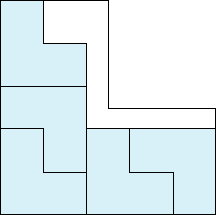
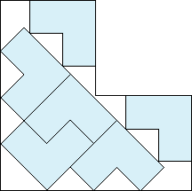
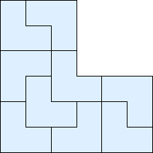
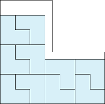
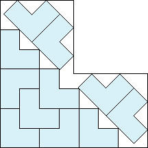
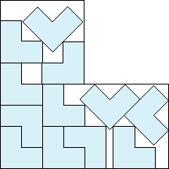
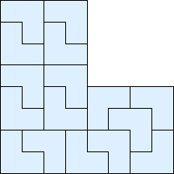

The following pictures show L's (with short side 1) packed inside the smallest known L (with short side s).
1.
2.-4.

5.

s = 1
Trivial.
s = 2
Trivial.
s = 5/2 = 2.5
Found by Maurizio Morandi
in July 2012.
6.

7.-9.

10.

s = 1 + 4√2/3 = 2.885+
Found by Maurizio Morandi
in July 2012.
s = 3
Trivial.
s = 7/2 = 3.5
Found by Maurizio Morandi
in July 2012.
11.

12.

13.-16.

s = 7/3 + √2 = 3.747+
Found by Maurizio Morandi
in July 2012.
s = (19 + 9√2) / 8 = 3.965+
Found by Maurizio Morandi
in July 2012.
s = 4
Trivial.